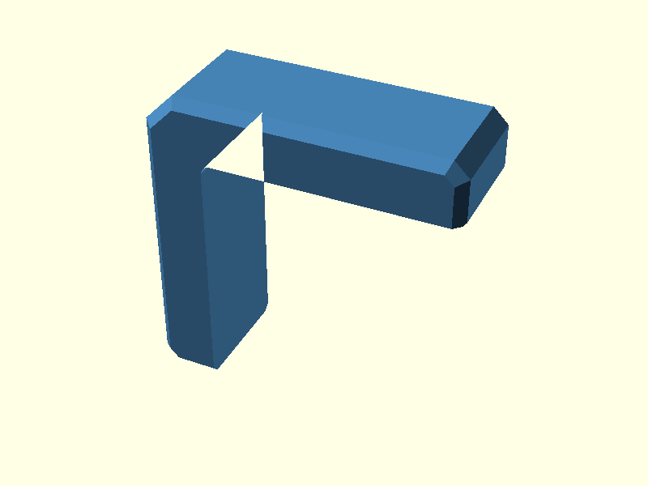
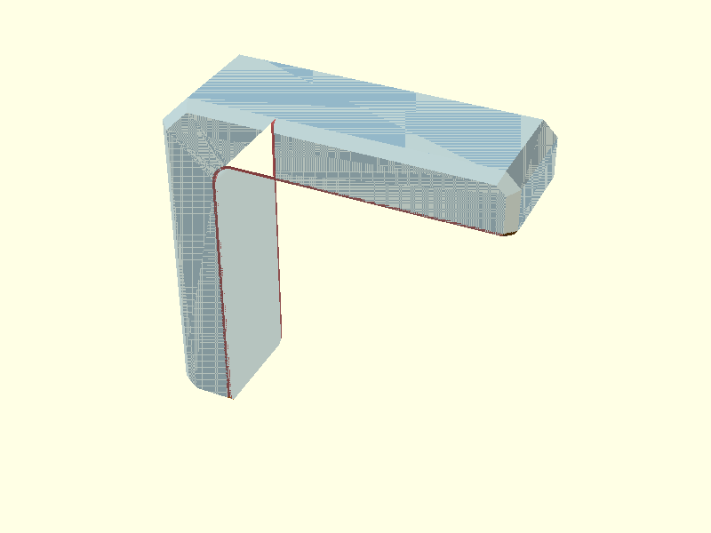
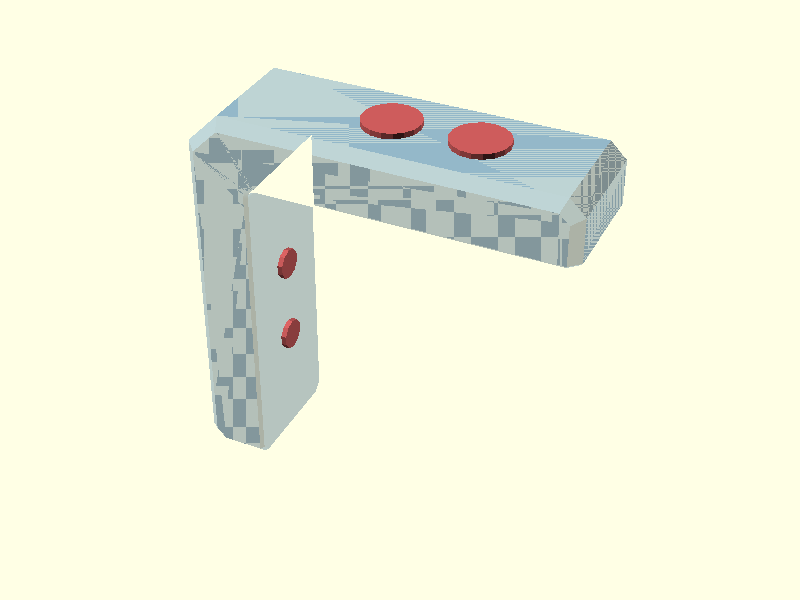
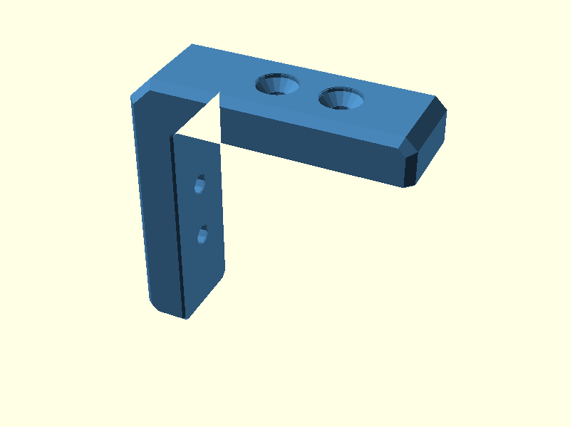
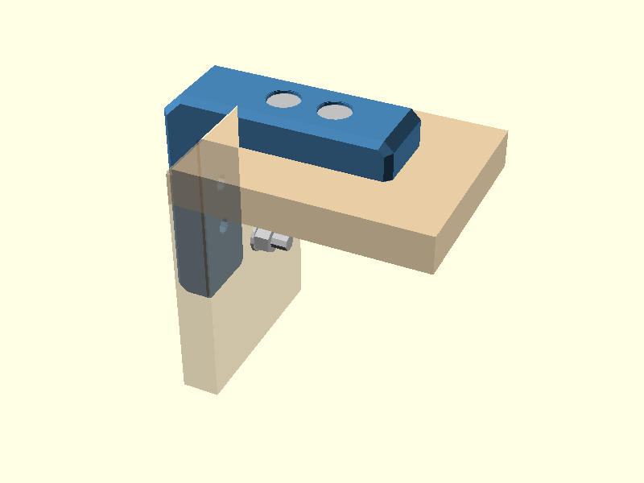
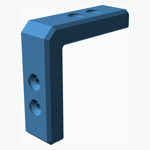
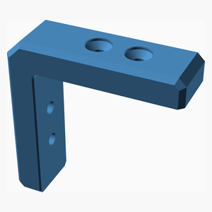
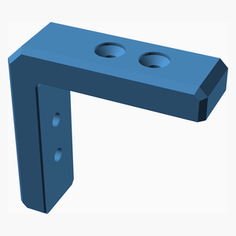

V0.1
Corner bracket — v0.1
Simplified outside-corner bracket for two plywood panels.
The current model uses four M5 DIN 7991-style countersunk bolts: two through each arm, entering from the outside and secured with an accessible washer and nut on the inside.
The former captive-nut pockets, access windows and printed plugs are no longer part of the production model.
This is still a prototype. Verify plywood fit, countersink dimensions, bolt length, print compensation and mechanical strength with real parts.
Design walkthrough
1. Build the L profile

base_profile_2d() contains the arm-end chamfers and large outside corner
chamfer. inside_corner_fill_2d() adds the rounded inside corner.
The tiny elephant-foot bevel on the two arm end faces is kept in this 2D profile instead of adding another pair of 3D cutters.
2. Create the outside side chamfer

outer_side_chamfer_keep_envelope() connects two convex outside profiles
with hull(). intersection() then clips that keep envelope with the real
L-shaped profile_body().
The hull creates the slope; the intersection only restores the real L boundary.
3. Remove one continuous side relief per print face

inside_opening_2d() describes the complete plywood-facing opening:
horizontal edge, rounded inside corner and vertical edge.
inside_side_relief_cuts() creates one continuous hull on each broad
printable side between the normal opening and an enlarged opening.
Only the small junction where this relief reaches the diagonal outside side chamfer needs a separate local correction.
arm_tip_relief_cuts() now uses one simple triangular prism placed with
fixed translate(), rotate() and mirror() calls. The previous
multmatrix() construction is no longer needed.
module print_compensated_body() {
difference() {
outer_side_chamfered_body();
inside_side_relief_cuts();
arm_tip_relief_cuts();
}
}
4. Cut four countersunk M5 bolt paths

Two bolt positions are generated on each arm. bolt_cuts() applies the
same countersunk_bolt_cut() at all four positions.
The DIN 7991 head still uses its real 90-degree conical countersink. A
separate bolt_hole_edge_relief adds only a very shallow flat cylindrical
enlargement at both bracket faces: around the head opening outside and
around the M5 through-hole exit inside.
The default source uses M5 × 35 with a 12 mm printed wall and 12 mm plywood. The bolt centres are 22 mm and 38 mm from the inner-corner reference. Both bolt rows remain centred across the bracket width. Bolt-tip clearance is checked separately by the model.
5. Final printable bracket

module bracket() {
difference() {
print_compensated_body();
bolt_cuts();
}
}
6. Installed preview

The plywood and hardware are display-only ghosts. They are not included in the bracket STL.
Further reading
The Chamfer Guide shows the continuous print relief and the small arm-tip correction in detail.
The Hull Guide explains why hull() is used once
as keep geometry for the outside chamfer and once as cut geometry
for the continuous inside relief.
The Polygon Guide explains the rounded inside corner.
The M5 Mounting Guide documents the current outside-to-inside four-bolt arrangement.
Printing and assembly
- Print the bracket on one broad flat side.
- Check the elephant-foot relief and plywood corner fit before drilling.
- Use the bracket as a drilling template only after that fit check.
- Install two M5 bolts per arm from outside to inside.
- Fit washer and nut on the inside and tighten without crushing the plywood or printed countersink.
The generated BOM contains only the printed bracket. Plywood and hardware are assembly materials, not printed BOM items.
Table of Contents
Parts list
| Main | TOTALS | |
|---|---|---|
| 3D printed parts | ||
| 1 | 1 | corner_bracket.stl |
| 1 | 1 | Total 3D printed parts count |
Main Assembly
3D Printed parts
| 1 x corner_bracket.stl |
|---|
 |
Assembly instructions

Printable bracket.
